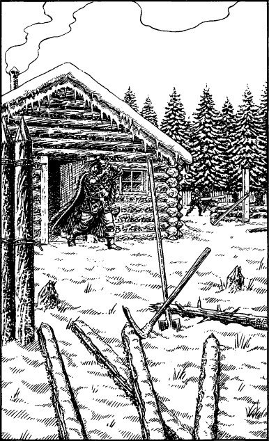

65
Prarg has reservations about your decision; he fears that your curiosity could be leading you both straight into the arms of the enemy. You understand his anxiety but you stand by your decision. Time is running against you and some risks must be taken if you are to discover quickly the location of Magnaarn and the Doomstone. With a nod of his head Prarg accepts the logic of your argument. Then, as if to reaffirm his loyalty, he draws his sword and offers to lead the way.
Cautiously you follow him through the dense trees, your nerves as taught as bowstrings. As you draw closer, you are able to make out the sounds of wood being chopped, gruff voices, and the jingle of horse bridles. Your suspicions are confirmed when you reach the edge of a clearing and see a Drakkarim encampment in the centre of recently cleared ground. Three log cabins, two only partially completed, stand in the middle of a circular ditch which is backed in turn by a chest-high wall of sharpened stakes. You count more than a hundred Drakkarim labouring to complete this forest outpost, while another fifty or so stand guard along its perimeter wall. They look well-equipped; all are clad in thick furs and studded leather armour, and they wield weapons which are unmistakably fresh from the forge.

Slowly you edge your way around the clearing until you are on the north side of the encampment. Here the perimeter wall has yet to be completed, affording you an unobstructed view of the cabins. You settle yourself behind a fallen tree and patiently you observe the main hut. Suddenly the door swings open, and a Drakkarim officer strides out into the snow. He pulls on his iron helm and draws his wolfskin cloak close about him as he goes off to inspect his men’s work. The door swings shut, but before it closes, you catch a glimpse of something that sparks your curiosity anew.